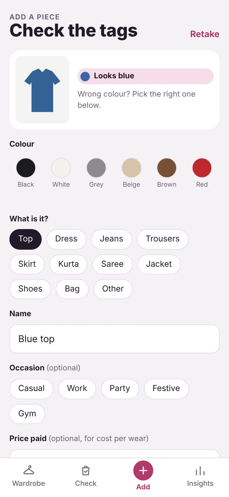
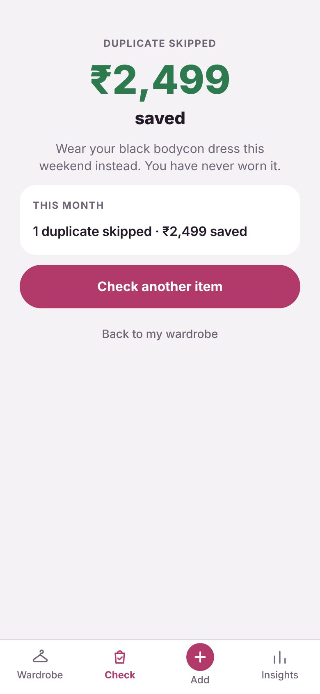
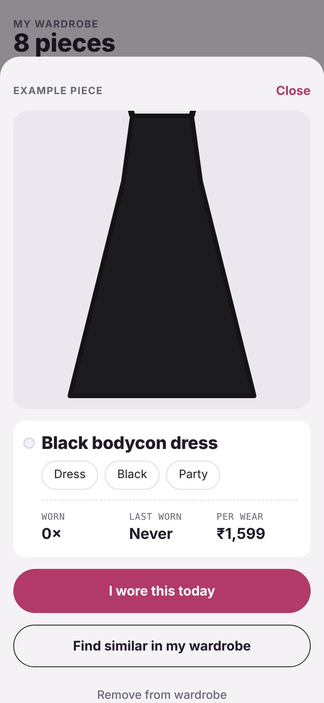
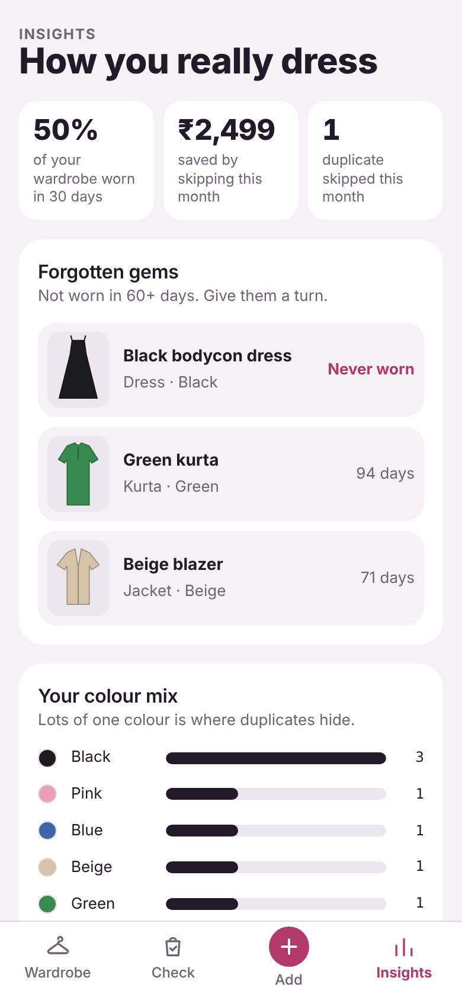

Case file 01 · Consumer · Mobile web
Closet Check
A phone app that shows you what you already own before you buy. I took it from a personal frustration to a live product in two weeks, as the Product Owner on every step.
The product
What it looks like






01 · Problem
From "another wardrobe app" to a second opinion before you buy
I kept buying black tops I already owned. Market research showed I was not alone, and that the space is crowded: a 2026 comparison lists ten major wardrobe apps. They share one weakness: users must photograph their whole wardrobe up front, and most give up.
So I moved the product to a different moment, the moment of buying.
| Typical wardrobe app | Closet Check | |
|---|---|---|
| Moment of use | Getting dressed in the morning | Standing in a shop, or browsing Myntra |
| Core question | What should I wear? | Do I already own this? |
| How it fills up | Big upload session at the start | One item at a time, when you buy or wear it |
| Value | Outfit ideas | Money saved, fewer duplicates |
02 · Research
I tested my assumptions before building anything
I wrote my assumptions down first, then built an 18-question Google Form where every question tested one of them. I shared it through Instagram stories, my product page and WhatsApp, exported the answers to Google Sheets and scored each assumption against a success threshold set in advance.
| Assumption | Validated if | Result |
|---|---|---|
| Duplicate buying is common | 50%+ say often or a few times | Validated |
| People don't know what they own | Many low-confidence answers (average 2.7 / 5) | Validated |
| The pre-purchase check is wanted | Average rating 4 or higher | Validated (4.3) |
| People will photograph items one at a time | 60%+ yes or maybe | Not validated (50%) |
| Existing apps fail because setup takes effort | "Too long to add clothes" is the top reason | Not tested: nobody had tried an app |
How I analysed it
- Cleaned the data: standardised city names and removed names and phone numbers.
- Cross-tabulated: frequent duplicate buyers rated their wardrobe knowledge 1 to 3; people with an organised cupboard rated it 4. Not seeing your wardrobe drives duplicates.
- Looked for contradictions: asked alone, the pre-purchase check scored highest; ranked against other features, it came fourth. Search and "not worn in months" were valued more.
- Named the limits: six responses from my own network is an early signal, not proof.
03 · Decisions
Every design decision traces back to a finding
| Finding | Decision |
|---|---|
| People love the outcome but won't do the photo work | Add a piece in under 10 seconds: automatic colour, one tap for type, everything else optional |
| Search by colour or type was among the most valued features | Search bar on the home screen, plain words like "black dress" |
| People shop online as much as in stores | The check accepts a shopping-app screenshot, not only a camera photo |
| Forgotten clothes are a common pain | Wear logging on every item and "forgotten gems" in Insights |
| The hero feature is not settled | Build both search and the check; the pilot shows which one people use |
Persona
Priya, 27, works in tech in Bangalore
Shops two to three times a month across Myntra, Instagram sellers and malls. Owns three almost identical black tops. Would only use an app that takes seconds. (A composite from the survey.)
Problem statement
Young working women in Indian cities who shop often buy near-duplicates because they cannot see their whole wardrobe at the moment of buying.
North Star metric
Duplicate purchases avoided per active user per month.
04 · Backlog
5 epics, 15 user stories, scoped with MoSCoW
Sample stories with acceptance criteria
US-1.1As a shopper, I want to add a piece with one photo, so that building my wardrobe takes almost no effort.
- Given I take a photo, I see it with a suggested colour.
- Given I tap a type, Save becomes active.
- Given I save, the item appears first and I see how many seconds it took.
US-3.1As a shopper in a store or on a shopping app, I want to snap or screenshot an item, so that I can check it against my wardrobe.
- Given I scan an item and tap its type, I see owned pieces with 70%+ match, best first.
- Given nothing matches, I see "nothing like this, go ahead".
What made the cut
- Must: one-photo add with auto colour, search and filters, check before buying, no login
- Should: wear logging, forgotten items, cost per wear, money saved
- Could: colour mix chart
- Won't, this version: outfit planner, AI garment recognition, accounts and sync, order-email import
Rule: build only what tests the core promise and the main risk.
05 · Design
Four flows, none longer than four steps
I mapped the flows and nine screens in Miro first, then built from them. The check path is the differentiator.
06 · Build
A one-page web app, free to host and private by default
How it works
- Colour detection: the photo is shrunk to a 64 × 64 grid, the background is ignored, and the most common colour is matched to a named colour.
- Similarity: 55% colour closeness and 45% garment type. 70% or more counts as similar.
- Storage: clothes and photos stay in the browser on the user's own phone.
- Hosting: GitHub Pages serves the single file for free.
Trade-offs I chose
- Web app, not native: works on any phone with one link; no push notifications.
- No backend: no cost or login; no sync across devices.
- Manual type, automatic colour: keeps adding under 10 seconds without an AI service.
I worked as the Product Owner; Claude was my engineering partner. I owned the requirements, acceptance criteria and testing.
07 · What's next
Measure behaviour, not opinions
- Two-week pilot with 5 users: measure seconds to add, items added, checks run, skips and week-2 return.
- Interviews on what made adding clothes easy or annoying, and which feature people actually used.
- Grow the survey to 30+ responses beyond my own network.
- Decide: persevere, pivot or narrow. If people skip adding clothes, test order-email import and AI tagging.